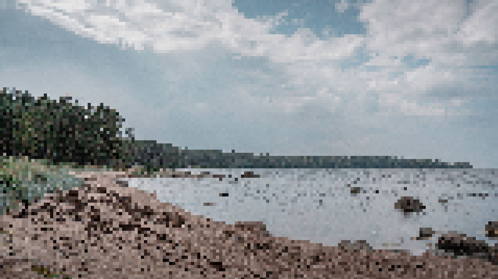

Waves
Water, oh water, you shall find!
So...uhm...where do you go? How are you sure that there will even BE water somewhere here? Ugh, wahtever. You decide to just walk and look out for river noises. Just pray that somewhere in here, there will, in fact, be a river.
You quietly step forwards, making sure to not be to loud in case the nearby sound of waves catch your atten-
Wait, quite...
Oh my goodness! Well aren't you the luckiest one alive.. You hear waves! and they seem to get louder the more you go forwards.

A few minutes pass, and you are..at the shore!!! This is even better than what you had hoped. River, nah, GIVE ME THE WHOLE OCEAN, thank you :DAnd... there's also a...raft..?
You have a lightbulb moment... maybe you can... maybe, just maybe... use the raft to reach civilization? You can see what looks like houses and building at the end of the ocean, after all...
But is it really worth the risk? What if that place is abandoned as well?
You stand still, clenching your fists and tightening your jaw as you gaze towards the moving ripples of the water.
No. You will do what you believe is right, and that is to...